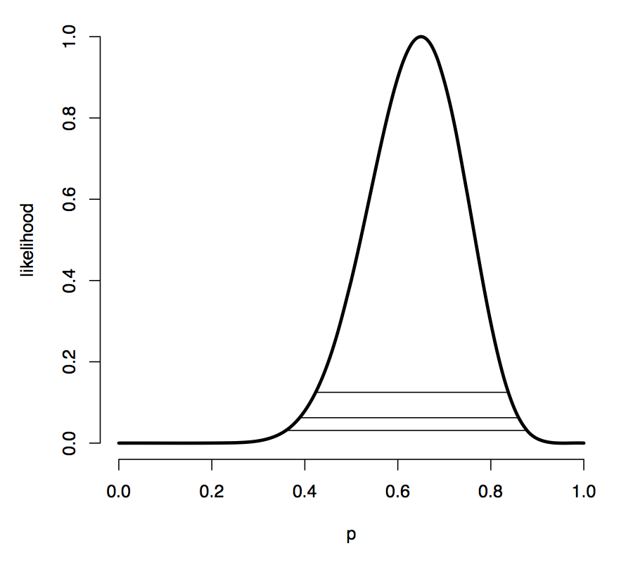

# Fisher 信息量
简单地说，信息量反映着某个统计量对于参数的确定程度的贡献。
定义上，Fisher 信息量被定义为：C-R 正则族得分函数的二阶矩。其中得分函数即为对数似然函数的一阶导。
其可以理解为：
- 得分函数的方差
- 负二阶导数的期望
那么如下图：
这是一个对数似然 - 参数曲线，我们希望这个曲线越陡峭越好，这意味着参数有着更大可能是某一值 ——
- 直观上，凸函数的峰越高，分布越集中，那么对数似然这个
[分布]的方差越小 - 正凹负凸，二阶导为负；凸得厉害很陡峭，意味着一阶导数变化率也很大，即二阶导的绝对值很大
- 一阶导数变化率大，即得分函数的
[分布]离散，方差大